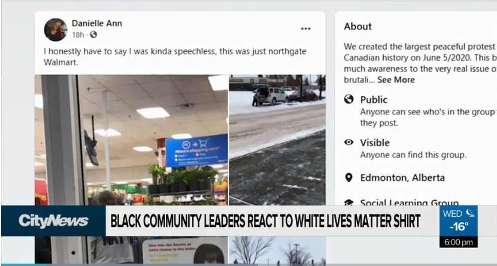
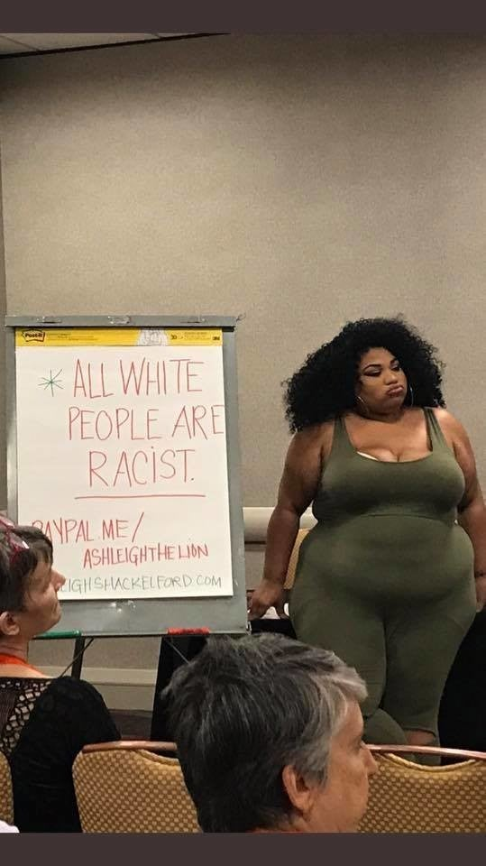

White Lives Matters Shirt: Shaniqua Seething
February 12th, 2021
CityNews:
TDC_ARTICLE_START
Black community denounces ‘White Lives Matter’ shirt spotted in Edmonton
EDMONTON (CityNews) – Alberta’s Black community leaders are denouncing a photo of a man wearing a “White Lives Matter” t-shirt in Edmonton, calling it “racist.”
The photo, taken at a Walmart in Northgate, shows a man inside the store wearing a white t-shirt with the words “White Lives Matter” in big black lettering on the back.
That slogan is widely considered as the racist response to the Black Lives Matter movement.
“That is a racist sentence and phrase,” said Tiera Williams, a racial justice advocate.
The woman who posted the photo online did not respond to CityNews’ request for an interview. But in her Facebook post, she said she was shocked by what she saw.
TDC_ARTICLE_STOP
Real News: Danielle is a bitch
Jesus fucking Christ. I hope she lived. I'm shocked that she even had to experience the sight. CALL 911 YOU MONSTERS!
TDC_ARTICLE_START
Black Lives Matter protests peaked in 2020 across the globe after the death of George Floyd.
“That’s why when they say Black Lives Matter, it’s because of this context, what happened,” said Jeanne Lehman, the executive director of Black Canadians Women in Action. “That’s why these people said, you know what, Black lives, like any other lives, matter.”
Williams, an anti-racism advocate, says it’s deeply hurtful to see this type of hate, especially during Black History Month.
“Society in every area tells white people that their lives matter,” said Williams, the co-founder of humanitarian group A Fight for Equity. “And it’s apparent that a lot of white folks across Canada feel that Black lives don’t matter.”
TDC_ARTICLE_STOP

I couldn't find a picture of Tiera "Fuck you Daddy White Man" Williams, so I just put this generic black Wahman pic in. I don't think it makes much difference.
TDC_ARTICLE_START
Williams worries hate and racism are becoming normalized in Alberta.
Last month, a man was spotted outside a Canada Post in Grimshaw, Atla. wearing a Ku Klux Klan-looking hood.
“That man walked around for over a month before anybody even took a picture or said anything,” said Williams. “The lack of outrage is very shocking.”
TDC_ARTICLE_STOP
Identified
I don't care if that's real or not, either way it's hilarious.
TDC_ARTICLE_START
And in the coming weeks – on Feb. 20 – an anti-lockdown march with ties to right-wing groups is being planned at the Alberta Legislature.
“Planning a torch march, which is reminiscent to what happed in Charlottesville a few years ago is concerning,” said Williams.
Williams and several anti-racism groups are planning a peaceful counter-protest.
“The point is to let them know that hate isn’t going to be allowed here,” she said.
TDC_ARTICLE_STOP
 Good god. Imagine reading this article and being like "mmmm hmmmm you go girl. You tell 'em". As for the protest march, I'll be keeping an eye on it, but it is ~14 hours away, so odds of me going there are about 1/100.
Good god. Imagine reading this article and being like "mmmm hmmmm you go girl. You tell 'em". As for the protest march, I'll be keeping an eye on it, but it is ~14 hours away, so odds of me going there are about 1/100.
Good god. Imagine reading this article and being like "mmmm hmmmm you go girl. You tell 'em". As for the protest march, I'll be keeping an eye on it, but it is ~14 hours away, so odds of me going there are about 1/100.